Sobre esta guía
Este manual te guiará en la creación de una explotación de ovino de leche desde cero, paso a paso. Seguiremos el caso práctico de la Quesería "Los Llanos" en la provincia de Granada, con 200 ovejas de raza Manchega para producción de leche destinada a queso artesano.
La gestión de una explotación láctea incluye aspectos adicionales respecto a la de carne: control de calidad de la leche, analíticas, parámetros de grasa y proteína, recuento de células somáticas y la liquidación mensual con la industria.
Índice
- Pantalla de inicio
- Crear la explotación (ficha de finca)
- ️ Ajustes y paquete lácteo
- ️ Crear zonas / parcelas
- Crear el rebaño de leche
- Dar de alta los animales (con SCAN)
- Uso del escáner de crotales
- Gestión de ordeño y producción
- Analíticas de leche
- Liquidaciones y MOFA
- Alta de comprador de leche
- Comercialización de leche
- Albarán y documentos
- Trazabilidad y bloqueos sanitarios
Datos del ejemplo
| Campo | Valor |
|---|---|
| Nombre explotación | Quesería Los Llanos |
| Especie | Ovino |
| Raza | Manchega |
| Tipo de producción | Leche |
| Nº de animales | 200 |
| Rebaños | 1 (ordeño) + 1 (secado/reposo) |
| Zonas | 2 pastos + sala de ordeño + estabulación |
| Sistema | Semiextensivo |
| Comunidad Autónoma | Andalucía |
| Contrato lácteo | Quesería artesanal (transformación propia) |
Pantalla de inicio
Al abrir la aplicación por primera vez, aparece la pantalla de bienvenida. Selecciona Nueva Finca para empezar a crear tu explotación láctea.
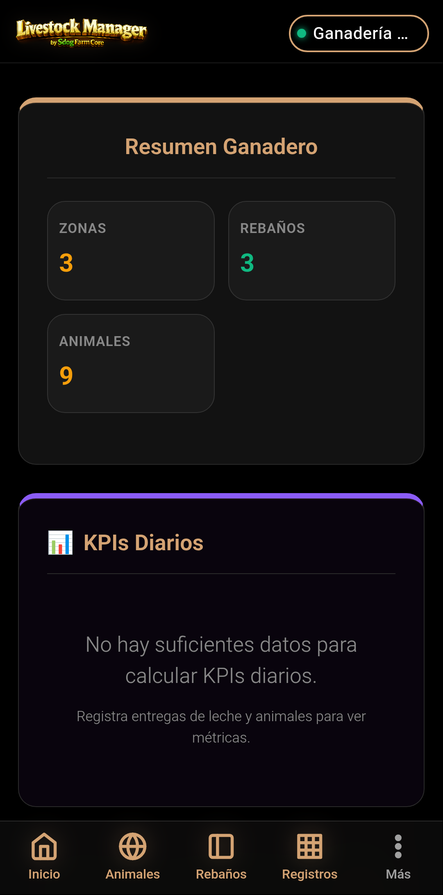
- Pulsa Nueva Finca.
- Si ya tienes otra explotación, ve a Más → Ajustes → Cambiar Finca → NUEVA FINCA.
Crear la explotación (ficha de finca)
Rellena la ficha de la finca con los datos de tu explotación láctea. Presta especial atención al tipo de explotación: selecciona Leche para que la app active los módulos específicos de control lechero.
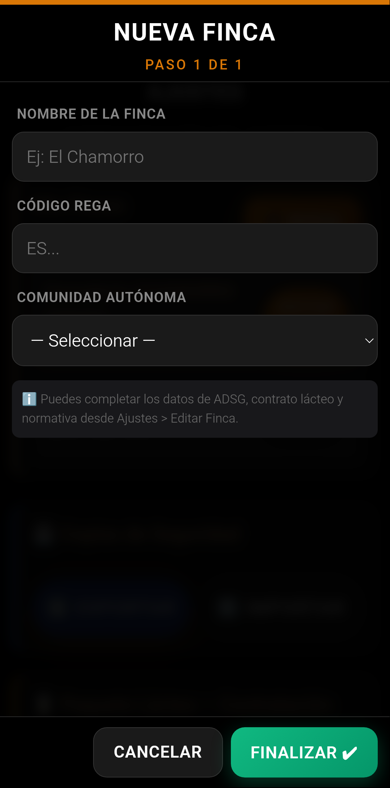
Campos del formulario
- Nombre: Quesería Los Llanos
- Propietario: María Jiménez Torres
- NIF / CIF: 87654321B
- Dirección: Camino del Molino s/n, 18193, Granada
- Teléfono: 958 123 456
- Email: maria@queserialosllanos.es
- Código REGA: ES1801200002
- CEA: 18/012/00002
- Comunidad Autónoma: Andalucía
- Provincia: Granada
- Municipio: Loja
- Tipo de Explotación: Leche ← IMPORTANTE: elige "Leche" para que la app active el control lechero, analíticas, liquidaciones y alertas de calidad.
- Sistema de Explotación: Semiextensivo — Pasto con suplementación en sala.
Pulsa GUARDAR al terminar.
️ Ajustes y paquete lácteo
Una vez creada la finca con tipo Leche, la app activa automáticamente el módulo de control lechero. Accede desde Más → Ajustes para completar la configuración específica.
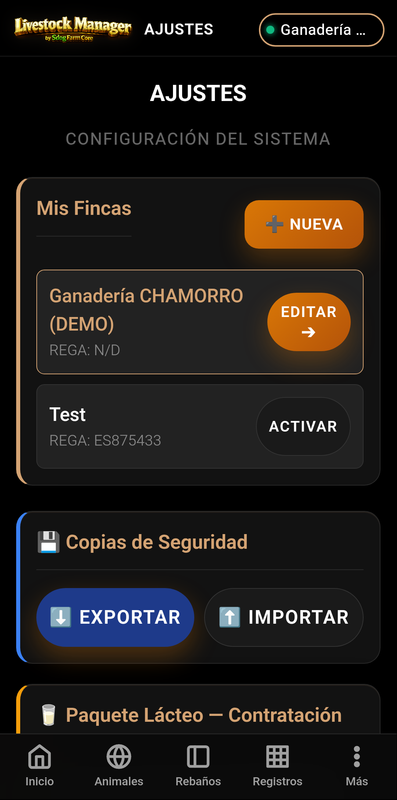
- Completar ficha de finca con datos de ADSG (como en el manual de carne, pasos 3.1 a 3.6).
- Paquete Lácteo — Sección específica que aparece cuando el tipo de explotación es "Leche":
- Contrato lácteo obligatorio: Número de contrato con la industria o declaración de transformación propia. TRANSFORMACIÓN PROPIA
- INFOLAC: Código de registro en la base de datos de entregas de leche. ES1801200002-LECHE
- Entregas directas al consumidor (litros/año): 0
- Transformación propia (litros/año): 85000
- Configurar especies — Verifica que Ovino está presente con tipo de producción Leche. Añade el tipo si no aparece.
- Copia de seguridad: Exporta un primer backup.
️ Crear zonas / parcelas
Para una explotación láctea semiextensiva necesitarás pastos para el rebaño y una zona de estabulación con sala de ordeño. Accede desde Más → Zonas.
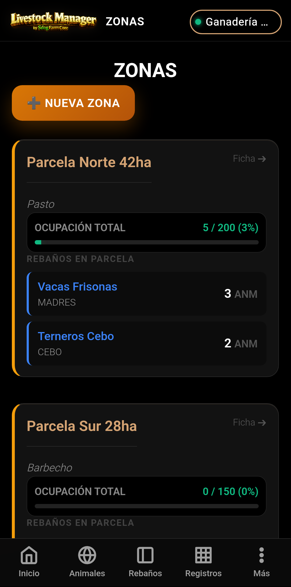
- Pulsa Nueva Zona. Crea las siguientes zonas:
- Pastizal Alto 30ha — Pasto, aforo 120
- Pastizal Bajo 20ha — Pasto, aforo 80
- Nave Ordeño / Estabulación — Estabulación, aforo 250
- Parcela Descanso Sanitario — Cuarentena, aforo 30
Crear el rebaño de leche
En una explotación láctea es recomendable tener dos rebaños: el de ordeño (hembras en producción) y el de secado / reposo. Accede desde Rebaños.
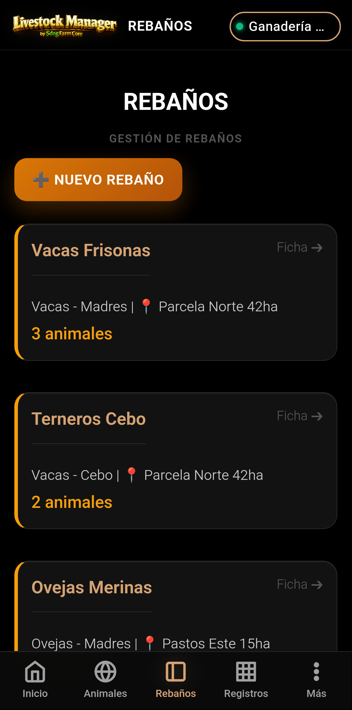
Rebaño 1: Ordeño (producción activa)
- Pulsa .
- Rellena:
- Nombre: Ovejas Ordeño
- Especie: Ovino
- Tipo: Madres
- Zona: Nave Ordeño / Estabulación
- Capacidad: 180
- Pulsa Guardar.
Rebaño 2: Secado / Reposo
- Pulsa .
- Rellena:
- Nombre: Ovejas Secado
- Especie: Ovino
- Tipo: Secado
- Zona: Pastizal Alto 30ha
- Capacidad: 50
- Pulsa Guardar.
Dar de alta los animales (con SCAN)
El registro individual es el núcleo de la trazabilidad, especialmente en producción láctea donde cada animal tiene un historial sanitario que afecta a la calidad de la leche. Accede desde Animales.
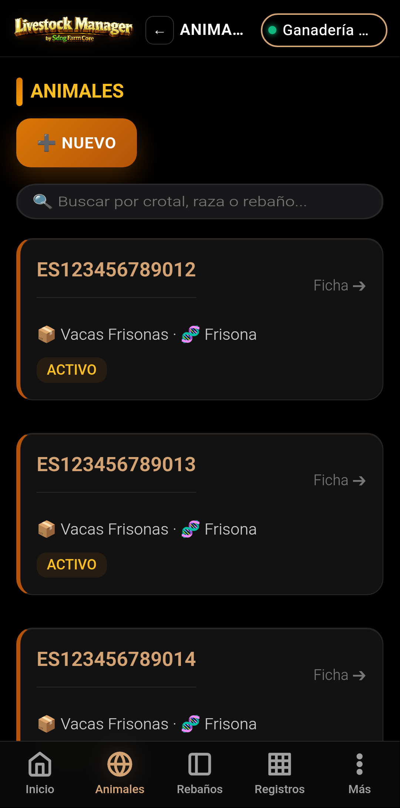
- Pulsa NUEVO.
- Nº de CROTAL — Identificador oficial.
ES011234567891Pulsa el botón SCAN junto al campo para leer el código QR/barras del crotal con la cámara. Ver detalle → - Especie: Ovino
- Sexo: Hembra (H) — Todas las ovejas de leche son hembras
- Raza: Manchega
- Rebaño: Ovejas Ordeño
- Fecha de nacimiento: 15/09/2024
- Tipo de alta: Nacimiento
- Peso inicial: 38.0 kg
- Fecha identificación: 15/09/2024
- Tipo identificación: Completa (EID + Visual)
Uso del escáner de crotales
El botón SCAN está disponible tanto en el formulario de alta como en el de edición de animales. Permite leer automáticamente el código impreso en el crotal.
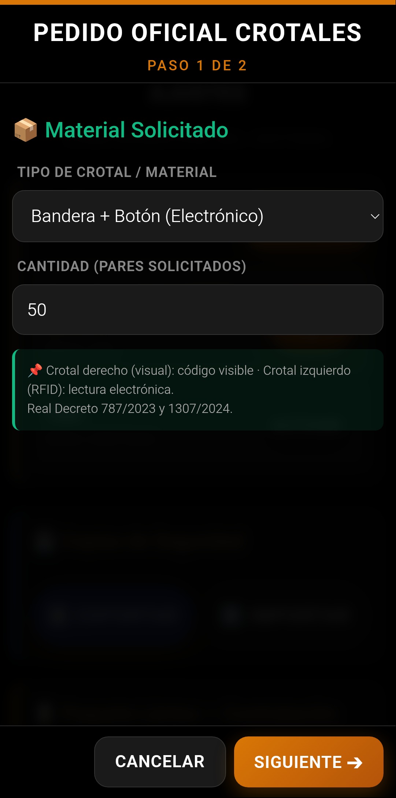
- En el formulario de alta (o edición), localiza el campo Nº CROTAL.
- Pulsa el botón SCAN a la derecha del campo.
- Concede permiso de cámara si es la primera vez.
- Apunta la cámara al código del crotal. El escáner reconoce:
- QR (2D) — En crotales electrónicos modernos
- Code 128 / EAN (1D) — En crotales con código de barras
- Data Matrix — En crotales de alta densidad
- Al detectar el código, el campo se rellena automáticamente y se valida el formato.
Sobre el botón NFC en explotaciones lácteas
El botón NFC no puede leer los chips electrónicos de los crotales (134.2 kHz), pero sí puede leer tags NFC (13.56 MHz) como pegatinas inteligentes o tarjetas de proximidad. En una explotación láctea puedes usar tags NFC para:
- Identificar cubos de ordeño o lotes de leche
- Identificar puntos de recogida en la sala de ordeño
- Control de acceso a la nave de ordeño
Para leer el chip del crotal necesitas un lector RFID Bluetooth externo (Allflex, Datamars).
Gestión de ordeño y producción
El registro de la producción diaria de leche es esencial para controlar la rentabilidad y la salud del rebaño. Accede desde Más → Control Lechero. La pantalla tiene cinco pestañas: Wizard, Producción, Analíticas, Liquidaciones y MOFA.
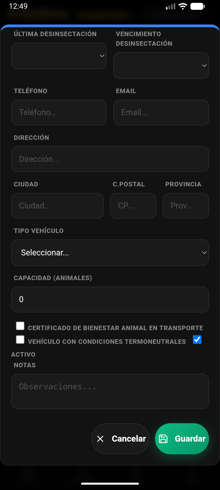
Registrar una entrega de leche
- En la pestaña Wizard, pulsa NUEVA ENTREGA.
- El asistente tiene 6 pasos. Complétalos en orden:
- Paso 1 — Fecha y CCAA
Fecha de recogida: 15/05/2025
CCAA de recogida: Andalucía - Paso 2 — Cisterna y transporte
Matrícula cisterna: 1234 ABC
Transportista: (selecciona uno dado de alta previamente)
Temperatura de carga: 4.2 °C (debe ser ≤ 6 °C)
Nº Muestra Letra Q: M-2025-0515-001 - Paso 3 — Cadena de frío
Temperatura en recogida: 4.2 °C
Temperatura en llegada: 4.5 °C
Tiempo desde ordeño: 3 h - Paso 4 — Laboratorio (analítica)
Grasa (%): 6.8
Proteína (%): 5.7
Extracto seco (%): calculado automáticamente: 12.5
Células somáticas (×1000/ml): 350 (límite: ≤ 500)
Gérmenes (UFC/ml): 15000 (límite: ≤ 50000)
Antibióticos: Negativo ← ¡obligatorio! - Paso 5 — Precio y liquidación
Cantidad (litros): 420
Precio base (€/litro): 1.85
Primas / penalizaciones (€): +15.00 (prima por calidad) - Paso 6 — MOFA
Coste alimentación (€/litro): 0.72
MOFA calculado: 1.13 €/litro
- Paso 1 — Fecha y CCAA
- Revisa el resumen y pulsa Confirmar Entrega.
Grasa: > 5.5% | Proteína: > 4.5% | Células somáticas: < 500.000/ml | Gérmenes: < 50.000 UFC/ml | Antibióticos: Negativo
Analíticas de leche
La pestaña Analíticas del Control Lechero muestra la evolución de los parámetros de calidad y los compara con los umbrales de referencia (LIGAL).
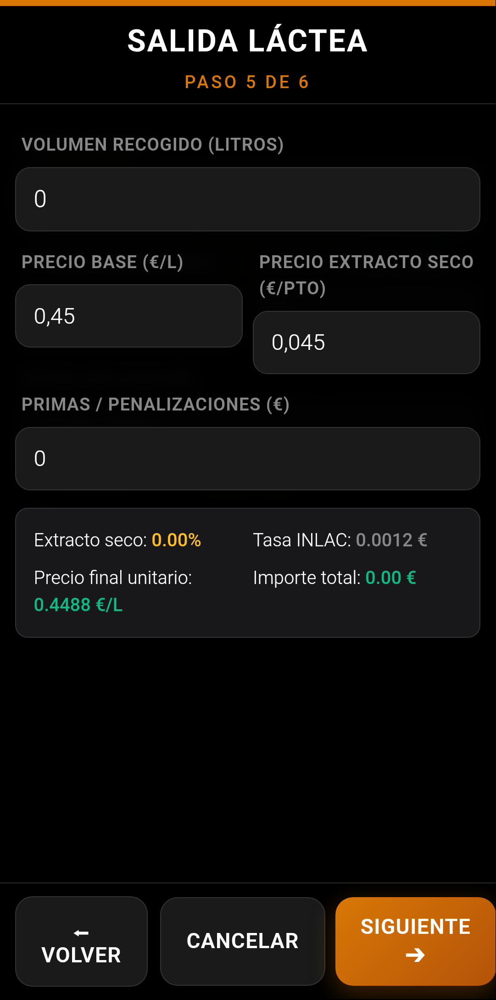
- Desde Más → Control Lechero → Analíticas, consulta:
- Evolución de grasa y proteína — Gráfico de las últimas entregas
- Recuento de células somáticas — Indicador de mamitis subclínica
- Recuento de gérmenes — Indicador de higiene de ordeño
- Umbrales LIGAL — Límites legales para cada parámetro
- Interpreta los resultados con la tabla de referencia:
| Parámetro | Valor actual | Umbral LIGAL | Estado |
|---|---|---|---|
| Grasa | 6.8% | ≥ 4.5% | OK |
| Proteína | 5.7% | ≥ 4.0% | OK |
| Extracto seco | 12.5% | — | OK |
| Células somáticas | 350.000/ml | ≤ 500.000/ml | OK |
| Gérmenes | 15.000 UFC/ml | ≤ 50.000 UFC/ml | OK |
| Antibióticos | Negativo | Negativo | OK |
Liquidaciones y MOFA
La pestaña Liquidaciones desglosa el importe económico de cada entrega, y la pestaña MOFA calcula el Margen Sobre el Coste de Alimentación.

- Liquidaciones: Cada entrega registrada aparece con su desglose:
- Volumen entregado (litros)
- Precio base + primas/penalizaciones
- Tasa INLAC aplicada
- Importe total de la entrega
- MOFA (Margen sobre alimentación):
- Se calcula automáticamente: Precio venta - Coste alimentación por litro
- Para este ejemplo: 1.85 €/L - 0.72 €/L = 1.13 €/L
- Un MOFA positivo indica que el precio de venta cubre el coste de alimentación
Alta de comprador de leche
Para vender la leche debes tener el comprador registrado. Accede desde Más → Compradores.
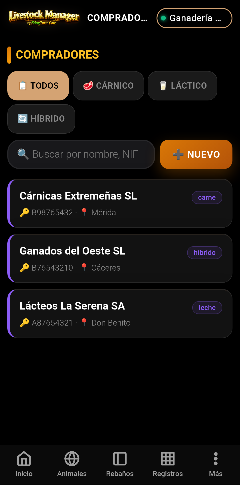
- Pulsa Nuevo.
- Rellena:
- Nombre / Razón Social: Central Lechera de Granada S.A.
- NIF / CIF: A98765432
- Tipo: Leche — Fundamental para filtrar en las operaciones
- Teléfono: 958 987 654
- Población: Granada
- Condiciones de pago: 45 días fecha factura
- Pulsa Guardar.
Comercialización de leche
Registra la venta de leche desde Más → Comercialización → pestaña Leche. El proceso genera automáticamente el albarán con todos los datos fiscales y sanitarios.
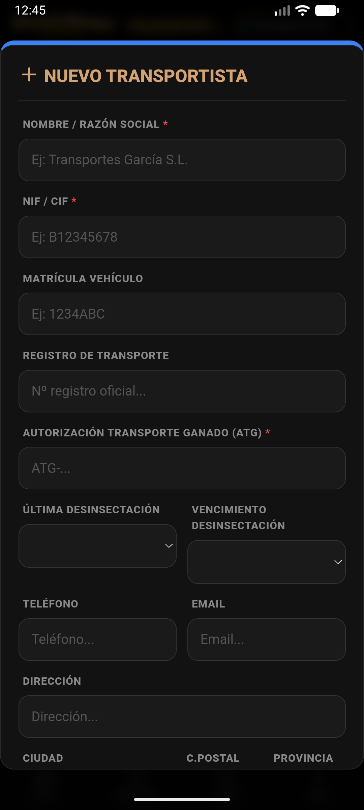
- En la pestaña Leche, pulsa NUEVA VENTA.
- Completa el formulario:
- Fecha: 15/05/2025
- Comprador: Central Lechera de Granada S.A.
- Cantidad (litros): 420
- Precio base (€/L): 1.85
- Primas / Penalizaciones (€): 15.00
- Matrícula cisterna: 1234 ABC
- Nº Muestra Letra Q: M-2025-0515-001
- Certificado inhibidores: Ausencia declarada
- Tasa INLAC: 0.003 €/L
- La app calcula automáticamente:
- Total bruto: 792.24 € = (420 × 1.85) + 15 - (420 × 0.003)
- Estado analítica: Completado
- Pulsa Confirmar Venta.
Albarán y documentos generados
Al confirmar la venta se genera un albarán con toda la información fiscal y de trazabilidad. Puedes descargarlo en PDF y compartirlo con el comprador.
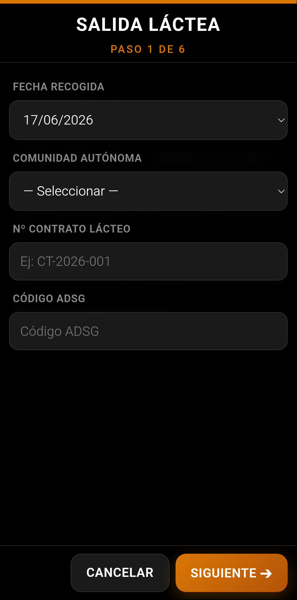
- El albarán incluye:
- Cabecera: vendedor, comprador, fecha, nº de albarán
- Trazabilidad láctea: matrícula cisterna, muestra Letra Q, temperatura de carga, certificado de ausencia de inhibidores
- Económico: volumen, precio base, tasa INLAC, primas, estado analítico y total bruto
- Desde el detalle de la venta, pulsa DESCARGAR PDF para obtener el documento. El PDF se puede compartir por email, WhatsApp, Google Drive, etc.
- Todos los documentos generados se almacenan en Más → Documentos y se pueden consultar en cualquier momento.
Trazabilidad y bloqueos sanitarios en leche
En producción láctea, la trazabilidad sanitaria es especialmente crítica porque los tratamientos medicamentosos pueden pasar a la leche. La app controla automáticamente los periodos de supresión y bloquea la comercialización si hay algún riesgo para la seguridad alimentaria.
- Bloqueo por periodo de supresión: Si un animal ha recibido un tratamiento con tiempo de espera para leche, la app lo registra y bloquea su leche hasta que pase el periodo.
- Bloqueo permanente: Algunos medicamentos tienen prohibidoLeche = true o un tiempo de espera de 999 días. Si un animal recibe estos tratamientos, su leche queda bloqueada de forma permanente y el animal debe ser apartado del rebaño de ordeño.
- ¿Cómo consultarlo? Desde Más → Trazabilidad
puedes ver:
- Alertas sanitarias activas (animales en periodo de supresión)
- Histórico de tratamientos por animal
- Estado de notificación REGA de cada animal
prohibidoLeche = true, la app bloquea la comercialización de leche
de ese animal de forma permanente. El animal debe ser trasladado al rebaño
de secado/baja o eliminado del circuito de ordeño.Resumen del flujo completo (ovino de leche)
- Inicio — Pulsa "Nueva Finca"
- Crear finca — REGA, CCAA, tipo Leche, sistema Semiextensivo
- ️ Ajustes — Rellena el paquete lácteo (contrato, INFOLAC)
- ️ Zonas — Pastos + nave de ordeño + cuarentena
- Rebaños — Ordeño + Secado
- Animales — Alta con crotal SCAN, raza Manchega
- Ordeño — Registra entregas con analítica completa
- Analíticas — Controla grasa, proteína, somáticas y antibióticos
- Liquidaciones — Revisa importes y MOFA
- Comprador — Da de alta a la central lechera
- Venta — Registra la venta con todos los parámetros de calidad
- Documentos — Albarán PDF con trazabilidad Letra Q
© Livestock Manager Premium — Ejemplo práctico de ovino de leche.
Datos de ejemplo: Quesería Los Llanos, raza Manchega, sistema semiextensivo, Granada.